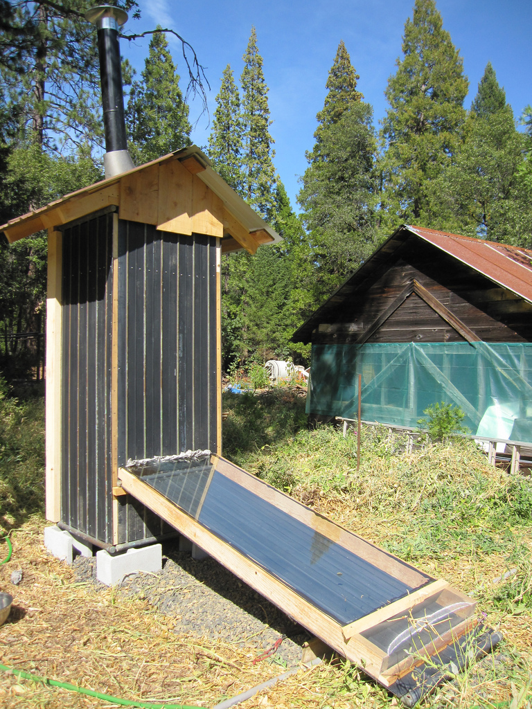
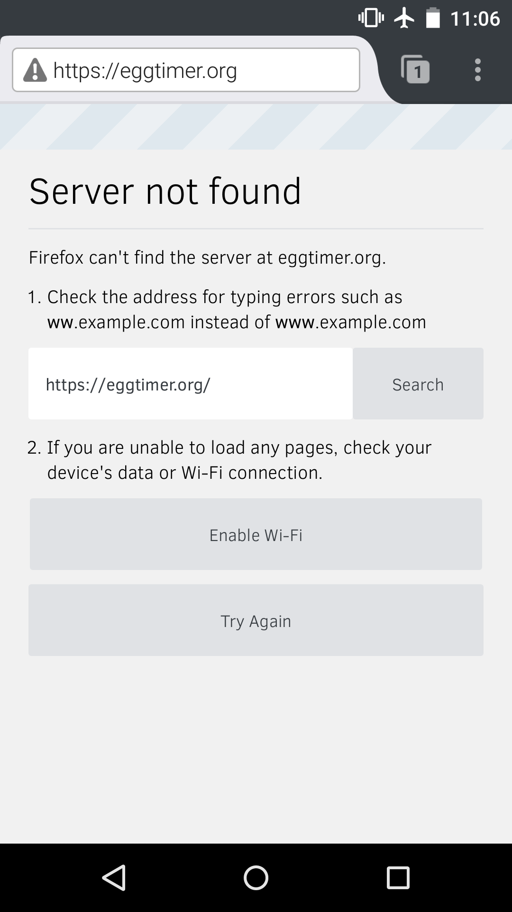
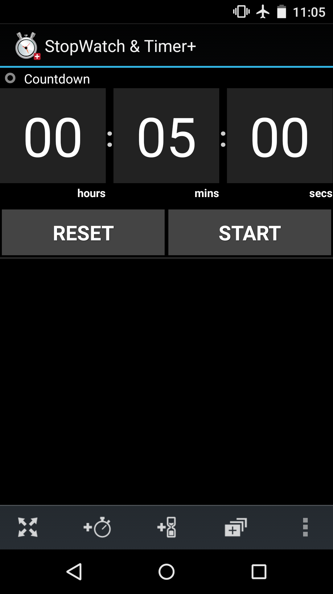
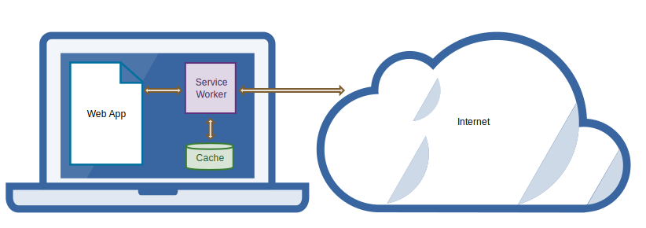

Offline Web Apps On GitHub Pages
This slide deck is using the shower system - roll over the previews to see
the notes and click any slide to go into presentation mode. Then use keys
to navigate. Go fullscreen
Abstract:
GitHub Pages is a simple web host for static assets. And Offline Web Apps
are designed to work well on devices without persistent network connections
(and thus no hard dependencies on dynamic server-side logic).
Which means GitHub Pages would be a great place to host Offline Web Apps,
if there was a way for them to ensure they'll be cached despite not having
control over the web server configuration. Service Workers provides
that missing piece.
Come see how Offline Web Apps hosted on GitHub Pages can use Service Workers
to cache themselves consistently and persistently, including automatic,
silent, and incremental updates, with graceful degradation on browsers
that don't support them.
You'll learn what Service Workers are, find out how to integrate them into
Grunt and Gulp toolchains, and see demos of Offline Web Apps on GitHub Pages
surviving page reloads and browser restarts on disconnected devices.
Image by Orin Zebest
GitHub Pages is a great, simple web host for static pages.
Successful technologies often get repurposed for uses that were unintended by their original designers.
What else can we do with it? Let's find out!

Image by fishermansdaughter
Offline Web Apps are apps that work when your network connection doesn't.
Your browser loads them, and you can use them.
Games, utilities, anything that isn't absolutely dependent on the network.
Not just for airplane mode, but also on lie-fi (i.e. wi-fi that doesn't work very well).

Browsers have had caches forever, but going offline usually means losing your ability to access the web.
Even if a web app's assets are in the browser's cache, it needs the network connection to load them.
Without a network connection, the web is usually broken.

By contrast, native apps "just work."
How do we make web apps "just work?"
Application Cache is a douchebag.
Jake Archibald
For the last few years, the only answer has been Application Cache.
It's a declarative Web API for specifying the assets of an app in a manifest file.
Browsers cache the declared assets and then use them when loading the app while offline.
But AppCache has a variety of issues. It doesn't support popular use cases,
it's full of footguns, and it just generally doesn't do what web developers want or expect.
So Web Platform Developers started over.
Service Workers To The Rescue! Image by Karsten Seiferlin
Service Workers are the anti-AppCache.
Whereas AppCache was declarative, Service Workers are declarative.
Whereas AppCache tried to solve a very specific problem,
Service Workers is a generic solution for a variety of problems.
Among them, however, and front-of-mind to the Web Platform Developers
who worked on the spec, was the Offline Web App use case.

Service Workers are a powerful abstraction.
A Service Worker is something akin to a server process running on a client (i.e. a user's machine).
It can intercept requests and serve them from its own local cache.
It also has a lifecycle, with well-specified procedures for updates.
At Mozilla we recently started work on an experimental Node module called Oghliner.
Oghliner is designed to streamline the process of deploying Offline Web Apps on GitHub Pages.
Yes, it's pronounced Oghliner, like trough, Gough Street, and ghoti!
It provides a template for an offline web app, so you can bootstrap a new app.
It also provides tools to offline and deploy an existing app on GitHub Pages.
Those tools can be used via a command line or integrated into a build system like Gulp and Grunt.
Finally, it automates the process of configuring Travis CI to auto-deploy to GitHub Pages.
> oghliner offline dist/
gulp.task('offline', function(callback) {
oghliner.offline({
rootDir: 'dist/',
fileGlobs: ['*.html', 'css/*.css', 'js/*.js',
'images/*'],
}, callback);
});
* creates offline-worker.js script in root directory
* also need to copy offline-manager.js and load it in HTML pages
> oghliner offline dist/
> oghliner deploy dist/
gulp.task('deploy', function(callback) {
oghliner.deploy({
rootDir: 'dist',
}, callback);
});
> oghliner deploy dist/
[show Network panel in Chrome]
[show Egg Timer counting down time left in presentation]
[reload Egg Timer, show it retaining state]
[kill network connection, reload Egg Timer, show it running]
[close Egg Timer, restart browser, reopen Egg Timer, show it running]
 Image by Michael Coghlan
Myk Melez, GitHub Universe, 2015
Image by Michael Coghlan
Myk Melez, GitHub Universe, 2015